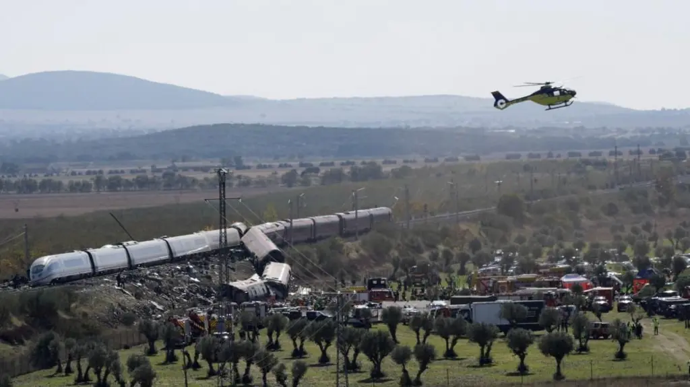

At least 64 killed in Spanish high-speed train crash with dozens seriously injured, regional government says

Overturned carriages and makeshift medical tents at Spain train crash site
What we know so far about deadly Spain train crash

Overturned carriages and makeshift medical tents at Spain train crash site
What we know so far about deadly Spain train crash
The two main blocs appear to have too few seats to form the next government without reliance on Arab parties.
3 hrs ago WorldHere’s what you need to know from John Healey’s first Budget, as the chancellor sets out the government’s tax and spending plans.
34 mins ago PoliticsDemocrats have promised a wave of probes into the Trump administration if they win back the House.
3rds ago US & CanadaThe defeated presidential candidate crossed a land border into Argentina late on Tuesday, Argentine migration authorities say.
1 hr ago WorldThe entertainer begins giving evidence at his trial on charges including rape at Southwark Crown Court.
35 mins ago CultureThe Villa Vie Odyssey suspended its voyage and is working with passengers on "temporary living arrangements".
3hrs ago Asia